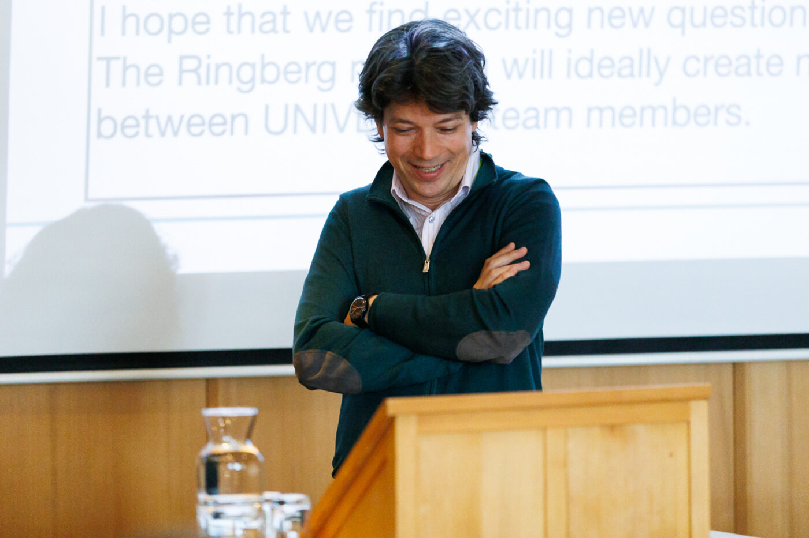
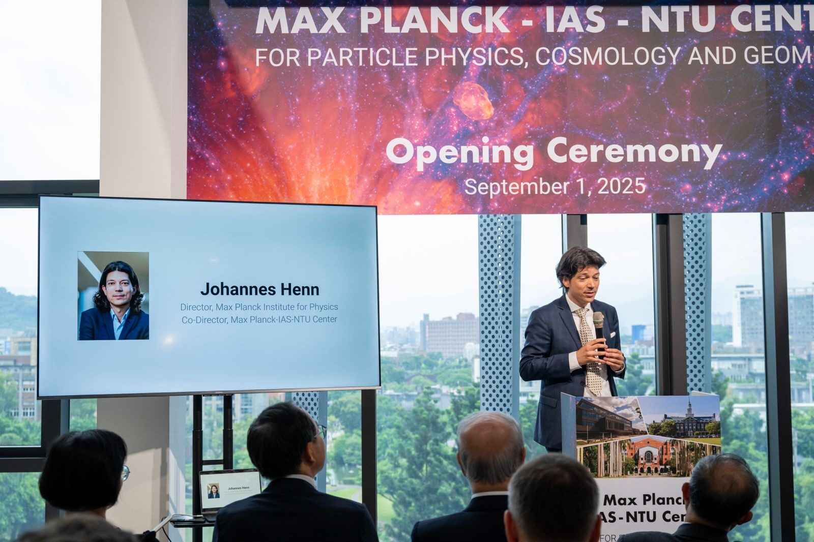

Talks & lectures
I regularly give plenary and invited talks at international conferences, colloquia for broad physics audiences, and lecture courses at PhD schools. Below is a selection with slides — if you are considering inviting me for a seminar, colloquium, or school, I look forward to hearing from you at henn AT mpp.mpg.de.


Selected conference talks
-
Novel Methods for Quantum Field Theory (Scattering amplitudes and Positive Geometry)
Colloquia & broad-audience talks
PhD school lectures
I have taught lecture courses at PhD schools internationally — venues include Brazil, the UK, China, France, and Taiwan, among them the Amplitudes Summer School in Prague and lectures at NORDITA, Stockholm. Lecture notes and recordings are collected under For students.
For organizers
Formats: specialist seminar · physics colloquium · public lecture · PhD school lectures.
Short biography (feel free to use for announcements):
Johannes M. Henn, born in Munich in 1980, studied physics at the University of Augsburg, the Université de Savoie, and the École Normale Supérieure de Lyon, and received his doctorate from the Laboratoire d'Annecy-le-Vieux de Physique Théorique. After postdoctoral research at Humboldt University Berlin, he was a member of the Institute for Advanced Study in Princeton (2011–2015) and professor at the University of Mainz (2015–2018). Since 2018 he has been a director at the Max Planck Institute for Physics and honorary professor at LMU Munich. His research explores scattering amplitudes in quantum field theory, linking theoretical and experimental particle physics; his differential-equations method for Feynman integrals has become a standard tool of the field. He leads the ERC Synergy Grant UNIVERSE+ and is one of three Co-Directors of the Max Planck–IAS–NTU Center for Particle Physics, Cosmology and Geometry.
Download speaker photo (high resolution) (Foto: A. Griesch/MPP)
{kind=link}